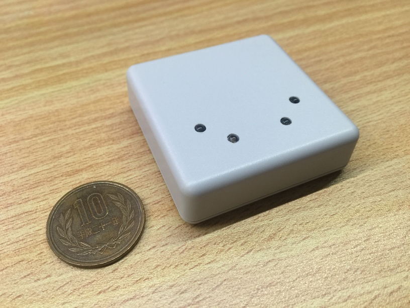
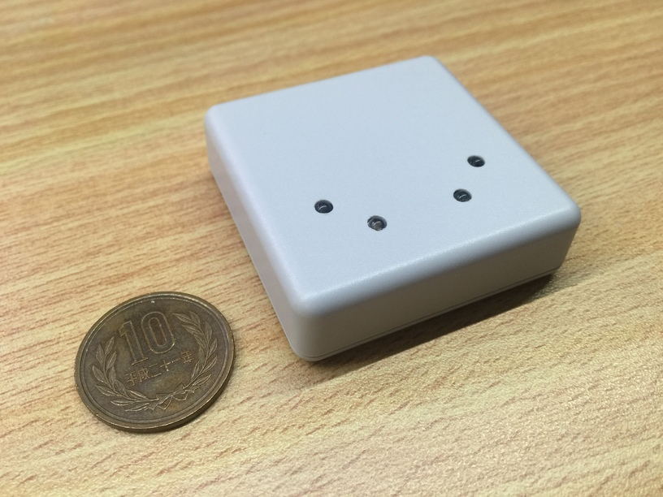

IR-Station
WiFi接続の赤外線学習リモコン
本体


壁に取り付けた時の様子

赤外線学習リモコンとは
赤外線学習リモコンとは，家電製品などのリモコンの赤外線信号を記憶して，代わりに家電製品をコントロールする機器です．「IR-Station」という名称は，私が命名しました．
操作方法
操作画面

操作にはブラウザを使用
リモコンの操作は普通のブラウザから行うので，どんなスマホやPCでも使用することができます．
はじめに赤外線を登録
まずはじめに，画面下方の「Recode a new Signal」ボタンから赤外線信号を登録します．これから登録するボタンの名前を入力し，IR-Stationに向けて家電製品のリモコンを押します．
家電製品をコントロール
一度赤外線信号を記憶してしまえば，あとは，ブラウザでボタンを押すだけです．
今後の課題
IP直打ちではなく，ホスト名でアクセス
今はmDNSという技術を使って名前アクセスしているのですが，これはAppleデバイスのみしか対応していないので，何らかの方法で，名前アクセスを実現したいです．
家の外からコントロール
今の段階では，LAN内のみからしかコントロールできませんが，今後，LANの外からもコントロールできるようにしたいです．